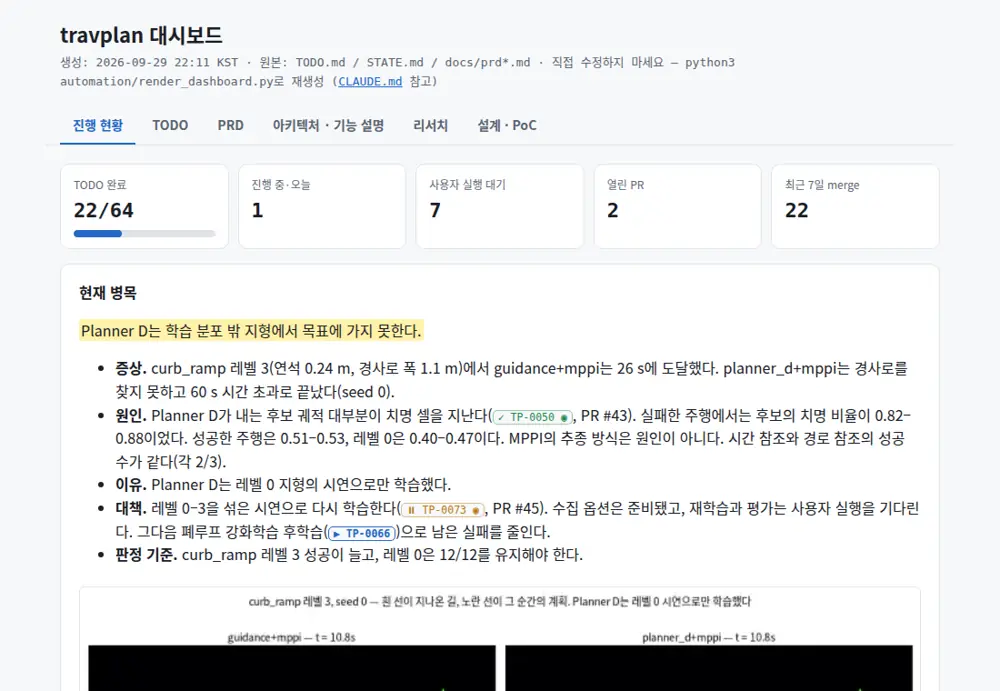
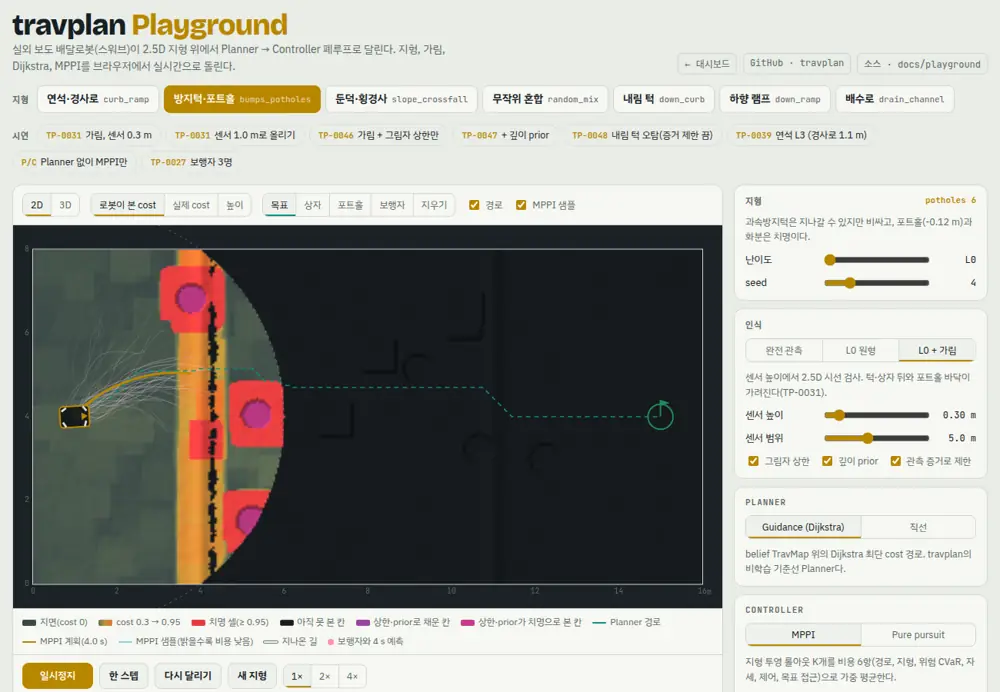

실외 보도 배달로봇(비동축 스워브)이 costmap 대신 2.5D 지형 표현(높이, 경사, 턱, 거칠기, 불확실성)만으로 턱·경사·포트홀을 피해 목적지까지 가게 하는 연구다. 학습 Planner가 경로를 내고 MPPI·NMPC Controller가 따라간다.

지금의 병목과 다음 작업, 모든 TODO의 GitHub 이슈·PR과 결과 그림, 로드맵, 리서치 문서를 한 곳에서 본다. 시뮬레이션 탭에서 Playground도 바로 돌린다.

지형, TravMap, 2.5D 가림, Dijkstra, MPPI, 스워브를 브라우저에서 실시간으로 돌린다. 목표·상자·포트홀·보행자를 놓고 저장소 결과를 시연 버튼으로 다시 본다.
TravMap[8,H,W]